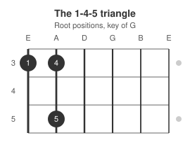
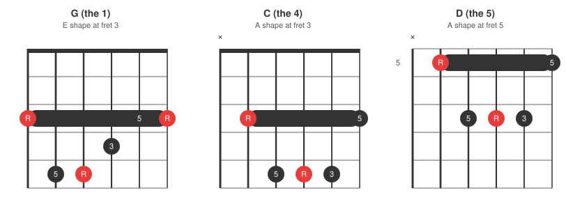
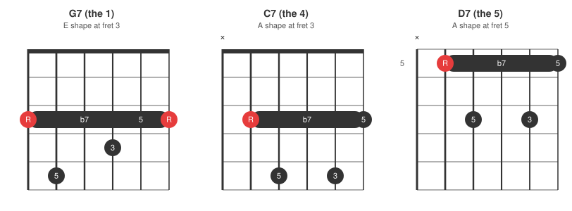

The previous post played the 12-bar blues with open guitar chords, which works beautifully in E or A and not at all in Bb. Barre chords remove that limit: two movable shapes and the whole progression follows your fretting hand up and down the guitar neck, one shape per string, any key.
Recap: where 1, 4, and 5 sit on the neck
The Diatonic Chords post built the full root recipe on the 6th and 5th strings:

The blues only needs the 1, 4, and 5 corners of that map, and they form a tight little triangle:
- 1 -- root on the 6th string.
- 4 -- same fret, 5th string. No counting; the tuning interval between the strings is a perfect 4th.
- 5 -- two frets up from the 4, still on the 5th string.
Here is just that blues subset on its own, in G:

Find one note and the other two chords are already under your hand. That triangle is the same at fret 3, fret 8, or anywhere else, which is what makes the barre version of the progression movable.
The two shapes
Each corner of the triangle gets a barre shape named after the open chord it is built from:
- E shape (6th string root) for the 1 -- the open E chord fingered with 2-3-4, with the index finger barring where the nut used to be.
- A shape (5th string root) for the 4 and the 5 -- the open A chord with an index barre, moved to each root.
Worked example: blues in G
Same G at fret 3 as the recap diagram. The 1 is the E shape at fret 3; the 4 sits directly below it at the same fret in the A shape; the 5 is that A shape slid up two frets:

The 4 is the 1's pattern dropped one string set at the same frets, and the 5 is the 4 slid two frets up -- the triangle from the recap, now wearing full chords. Play any 12-bar grid from the previous post with these three and notice how little the hand travels: the 1-to-4 change is a string hop at the same fret, and the 4-to-5 change is a two-fret slide of the same shape. The shuffle feel carries over unchanged.
Any key, same triangle
Slide the whole triangle so the E shape lands on the key's root note on the 6th string:
| Key | 1 (E shape, 6th string) | 4 (A shape, 5th string) | 5 (A shape, 5th string) |
|---|---|---|---|
| F | fret 1 | fret 1 | fret 3 |
| G | fret 3 | fret 3 | fret 5 |
| A | fret 5 | fret 5 | fret 7 |
| Bb | fret 6 | fret 6 | fret 8 |
| C | fret 8 | fret 8 | fret 10 |
| D | fret 10 | fret 10 | fret 12 |
This is the answer to the horn-player problem from the last post: when someone calls "blues in Bb", nothing about the progression changes -- the triangle just parks at fret 6.
The 7th variations
Want the bluesier dominant 7th sound from the previous post? Each barre shape turns into a movable 7th chord by lifting one finger: the freed string drops back onto the index-finger barre, and that barre note is the b7. In the E shape, lift the finger on the D string; in the A shape, lift the finger on the G string:

Same triangle, same frets, one finger fewer per chord. Swap them in wherever the grid wants more grit -- the 5 chord first, then all three -- and the triangle still plays the form anywhere on the neck.